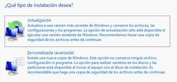

FORMATEAR
¿ Qué es formatear?
Consiste en limpiar el ordenador, dejarlo como nuevo, resetearlo es decir, instalar un SO (sistema operativo) en el ordenador borrando todo el contenido que había en el disco duro, o sea, como una instalación de fábrica totalmente nueva.
¿ Por qué formatear?
Solucionar problemas de software es complejo, con el tiempo el ordenador va quedandose más y más lento por problemas de registro (típico en Windows) o la infección de un virus hace que no hay más remedio que acudir al formateo (hay virus que no se solucionan formateando el equipo).
Queremos dejar claro NO ES LA FUNCIÓN DE UN COFOTAP formatear ordenadores, en el caso de un problema, ir al protocolo los equipos de mantenimiento se encargan de ese trabajo.
Si el servicio CAU va a formatear un equipo, hay que saber que antes hay que recuperar los archivos.
OJO con el software:
También pierdes todo el software instalado, anótalo todo antes para poderlo instalar una vez formateado, es importante pues conservar tanto los instaladores como las licencias de nuestros programas para futuras instalaciones.
Recuperar los archivos
Si no has sido prevenido y tienes archivos locales importantes en tu ordenador sin una copia de seguridad, es porque no has seguido nuestros consejos de almacenamiento
Antes de formatear, tenemos que saber que se van a borrar todos los documentos que existan en ese equipo. Pero puede ser que el problema que tenga el equipo hace imposible encenderlo.
No hay otra opción que arrancar el ordenador con una memoria USB con un sistema operativo LIVE es decir que se puede ejecutar desde la memoria sin necesidad de formatear el ordenador, recomendamos Linux Mint Mate y con ese SO recuperar los archivos locales del ordenador.
OJO en el caso de una infección, los documentos que recuperemos PUEDEN ESTAR INFECTADOS, piénsalo sin son imprescindibles habría que llevarlos a una memoria USB y pasarle un scaner de un antivirus.
Una vez recuperado todos los archivos, ya podemos llamar al servicio CAU para que proceda a "machacar" todo lo que quiera.
OJO CON FORMATEARLO TÚ
En el caso de que lo quieras hacer tú de forma particular, ten en cuenta que puedes volver inservible tu ordenador pues hay que tomar unas cuantas precauciones:
- Antes de formatear, hay que asegurarse todo el hardware asociado al ordenador FUNCIONA al meter el nuevo SO.
- No vale con pensar que si instalamos el mismo SO reconocerá de nuevo todo hardware, pues puede ser que haya hardware que necesite DRIVERS o CONTROLADORES no incluidos por defecto en el SO
- Hay programas que extraen los programas controladores que tienes instalados en tu ordenador para luego poder volcarlos cuando instalas el nuevo SO.
- Pierdes todo el software instalado, tienes que tener tanto los instaladores como los códigos de licencia si procede, para volver a instalar todo de nuevo.
El formateo se realiza arrancando el equipo con la memoria USB con el SO descargado, tal y como has visto en las diapositivas.
Hay dos tipos de instalaciones:
- No borrando el disco duro, se instala sobre el software ya instalado. Esto "puede" conservar nuestros documentos y programas.
- Borrando el disco duro, lo que se llama formateo es lo más seguro para solucionar problemas.

No vamos a hacer aquí un tutorial de fomatear un ordenador, en Internet hay buenos tutoriales, por ejemplo:
Qué es eso de los DRIVERS O CONTROLADORES Son programas que hablando mal pero simple, hacen de "traductores" entre el hardware y el SO. Cada vez los SO actuales tienen por defecto muchos Drivers de la mayoría de dispositivos y los fabricantes suelen proporcionar a los fabricantes de SO los drivers. Pero puede ocurrir que no los tenga, en ese caso hay que ir a la web del fabricante y descargar el controlador correspondiente al SO instalado. Esto ocurre sobre todo en:
- IMPRESORAS, SCANNERS Y AFINES
- PIZARRAS DIGITALES INTERACTIVAS
- En algunas tarjetas gráficas

Resolución de problemas por Javier Quintana Peiró bajo licencia Creative Commons Reconocimiento-NoComercial-CompartirIgual 4.0 Internacional License.